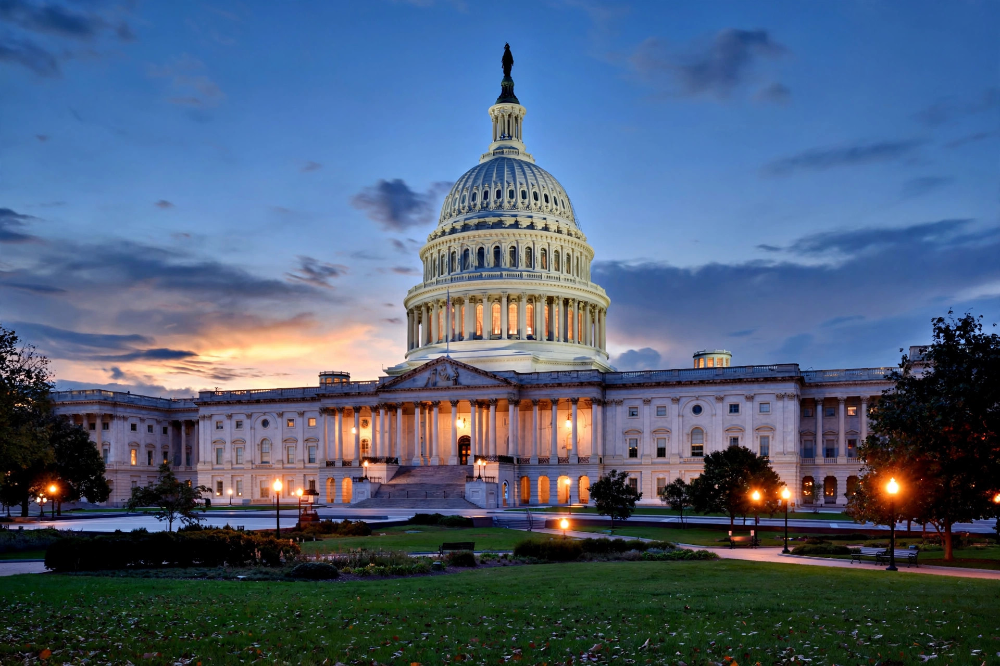

Congressional subpoena
From Wikipedia, the free encyclopedia

A congressional subpoena is a legal order, issued by a committee or subcommittee of the United States Congress, compelling a person or organisation to testify before Congress or to produce documents, records, or other evidence for a congressional inquiry. The subpoena power is one of Congress's principal tools for exercising its oversight of the executive branch and for gathering information in aid of legislation. The word subpoena derives from the Latin sub poena, "under penalty".
Legal basis
The United States Constitution does not expressly grant a subpoena power, but the Supreme Court has long recognised Congress's power of inquiry as implied by the legislative power. In McGrain v. Daugherty (1927), the Court upheld the Senate's power to compel testimony in an investigation of the Department of Justice, holding that the power of inquiry — "with process to enforce it" — is "an essential and appropriate auxiliary to the legislative function." In Watkins v. United States (1957), the Court emphasised that the power is broad but not unlimited: it must serve a legitimate legislative purpose, and compelled testimony must be pertinent to the inquiry.
House and Senate rules delegate subpoena authority to committees, typically allowing a committee chair to issue subpoenas either with the concurrence of the ranking minority member or by a vote of the committee. Two principal forms exist: the subpoena ad testificandum, compelling testimony, and the subpoena duces tecum, compelling the production of documents or things.
Enforcement
A recipient who refuses to comply with a congressional subpoena risks being held in contempt of Congress. Congress has three enforcement routes:
- Criminal contempt: under 2 U.S.C. §§ 192 and 194, the House or Senate may certify a contempt citation to the United States Attorney for the District of Columbia for prosecution. The offence is a misdemeanour punishable by a fine and up to twelve months' imprisonment. Its weakness is that prosecution depends on the executive branch — a difficulty when the recalcitrant witness is an executive official asserting executive privilege.
- Inherent contempt: Congress's historic power to arrest and detain a contemnor by its own authority, exercised through the Sergeant at Arms. Upheld in Jurney v. MacCracken (1935), it has not been used since the 1930s but is periodically proposed in modern disputes.
- Civil enforcement: the Senate may bring a civil action under 28 U.S.C. § 1365, and House committees have sued in federal court by authorising resolution, as in the litigation over the subpoena for former White House Counsel Don McGahn's testimony.
Limits and defences
Recipients may resist subpoenas on several grounds, including the Fifth Amendment privilege against self-incrimination, attorney–client privilege, and executive privilege asserted by the President to protect confidential communications within the executive branch. In Trump v. Mazars USA, LLP (2020), the Supreme Court considered congressional subpoenas for a President's personal financial records and directed lower courts to weigh separation-of-powers concerns, including whether the legislative purpose warrants involving the President's papers and whether the subpoena is no broader than reasonably necessary.
Notable uses
Congressional subpoenas have figured prominently in major investigations, including the Teapot Dome inquiry of the 1920s, the House Un-American Activities Committee hearings, the Senate Watergate Committee's subpoena for the Nixon tapes (litigated in a related form in United States v. Nixon), the Iran–Contra investigations, and impeachment inquiries in the modern era.